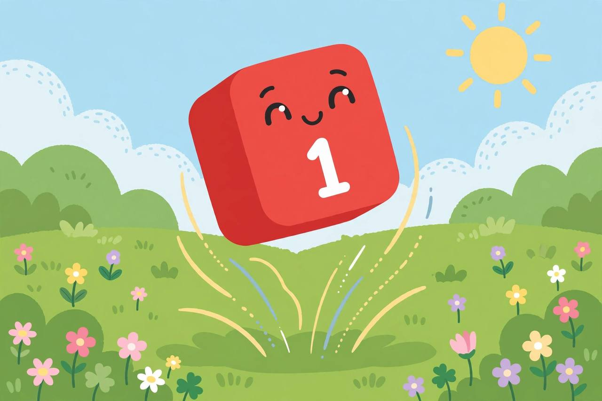
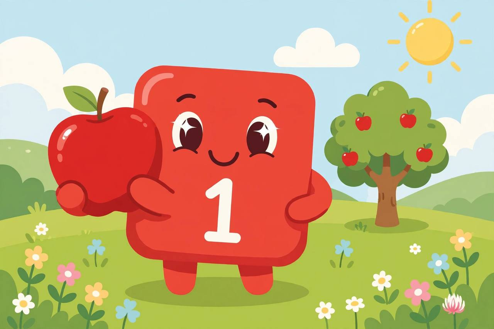

📖 剧情简介
一号蹦蹦跳跳登场，带大家认识数字 1！
Bouncy One arrives and introduces the number 1!
🎭 角色
一号 One
（数字乐园，阳光明媚 / Numberland, sunny day）
1
One一号
Hello! I'm One!
你好！我是一号！
1
One一号
I have one block, one nose, and one big smile!
我有一个方块、一个鼻子，还有一个大大的微笑！
1
One一号
Watch me jump! One jump!
看我跳！跳一下！

Watch me jump! One jump!
（一号跳起来 / One jumps）
1
One一号
One apple for me!
一个苹果，给我！

One apple for me!
1
One一号
One star in the sky, twinkling just for me!
天上一颗星，为我眨眼睛！
1
One一号
🎵 One, one, wonderful One!
🎵 一，一，神奇的一！
1
One一号
🎵 Just one of me, and that's such fun!
🎵 只有我一个，快乐无穷！
1
One一号
Everything's better with One!
有一号在，一切更美好！
1
One一号
One wonderful world, and one wonderful me!
一个美妙的世界，一个美妙的我！
1
One一号
Bye-bye! Remember: I'm number one!
再见！记住：我是第一名！